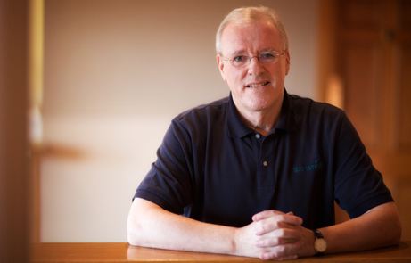

After many years, SportsMind is closing as Bill Beswick retires.
To every coach, player and fan who visited this site, bought a resource, or simply took an idea back to the training ground — thank you. Bill's work has helped stretch performances and shape positive attitudes across sports and across the world.
We're grateful to every client, colleague and supporter who has been part of this journey.
Wishing you all the best — on and off the pitch.